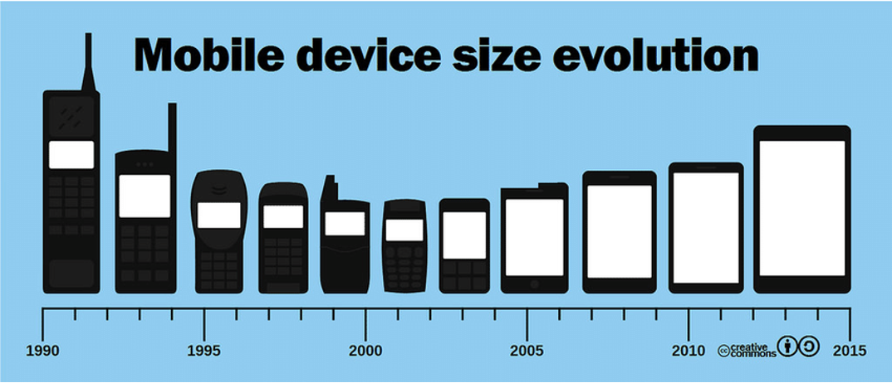
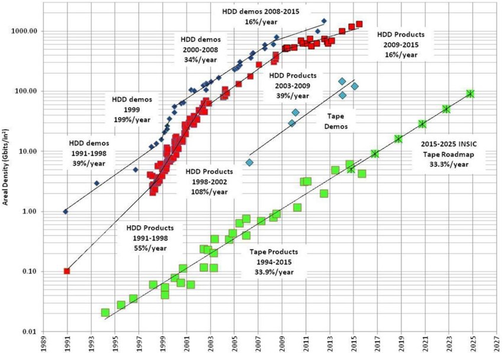
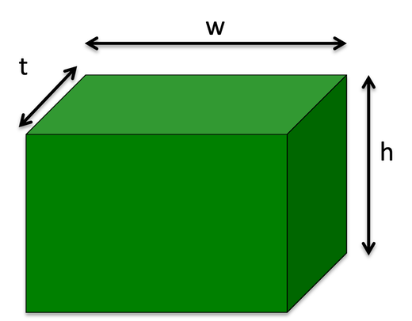
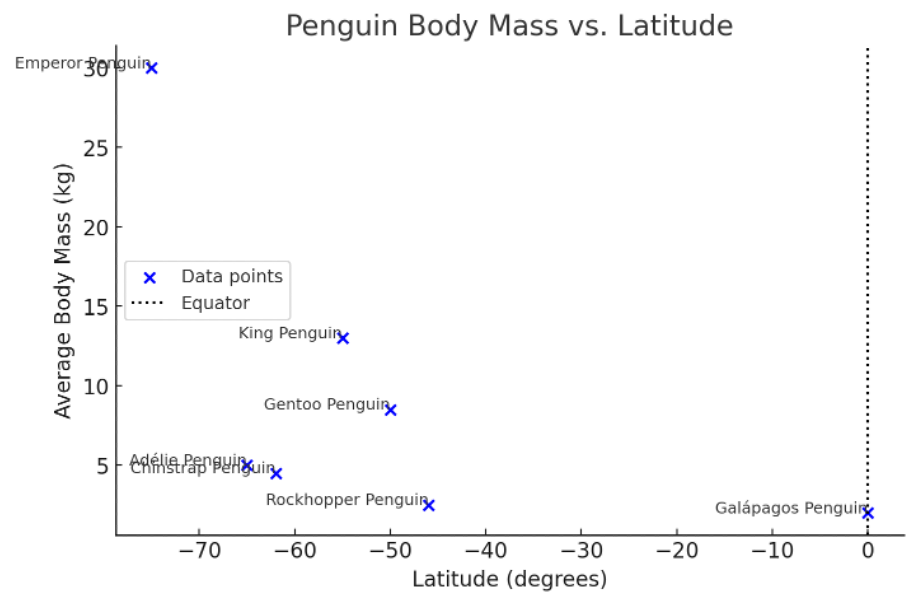
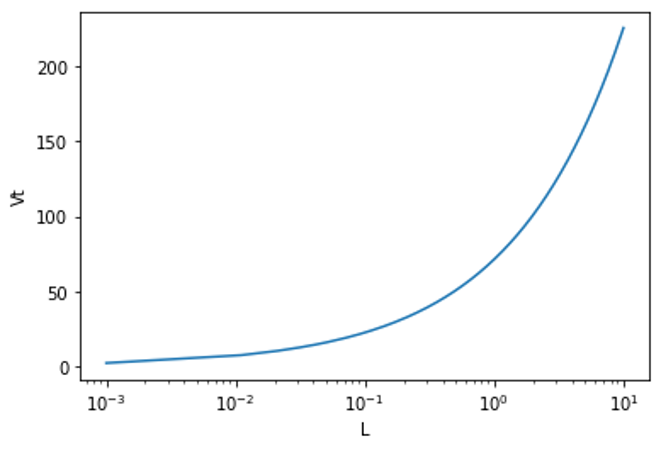
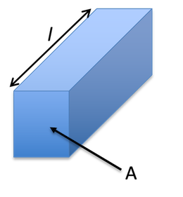

3. Introducing Scaling Laws#
3.1 Why make things smaller?#
Miniaturisation — making devices and components smaller — offers a wide range of benefits across science, engineering, and everyday technology:
3.1.1 Greater Efficiency and Speed#
Smaller components can operate faster, especially in electronics where reduced distances for signals mean quicker processing. This is key in modern microprocessors and communication devices.
3.1.2 Lower Power Consumption#
Miniaturised devices often use less energy, which extends battery life in portable electronics and reduces energy costs in larger systems.
3.1.3 Portability and Convenience#
Smaller devices are easier to carry, install, and integrate — think of smartphones, wearables, or implantable medical sensors. They make technology more accessible and user-friendly.
3.1.4 Cost Reduction (at scale)#
Once developed, miniaturised components can often be mass-produced more cheaply, especially using techniques like photolithography in chip manufacturing.
3.1.5 New Applications#
Miniaturisation opens the door to new fields like nanomedicine, lab-on-a-chip technologies, MEMS (Micro-Electro-Mechanical Systems), and wearable tech, where larger versions simply wouldn’t work.
3.1.6 Improved Functionality#
Smaller doesn’t mean simpler — miniaturisation allows more features to be packed into the same space, like multiple sensors or antennas inside a single chip.
3.2 Example: Changes in Functionality and Size of Mobile Phones Since the Mid-1990s#
1990s - Early 2000s: Emergence of Mobile Phones
 Fig 3.1 Mobile phones sizes over the last few decades.
Size:
Large and bulky, often referred to as “bricks.”
Primarily designed for basic voice calling.
Functionality:
Limited to voice calls and basic text messaging (SMS).
Small, monochrome displays mainly for dialing numbers.
Battery Life:
Large batteries with long standby times but short talk times.
Phones were primarily used for short communication bursts.
3.2.1 Early 2000s – Mid-2000s: Miniaturisation and Added Features#
Size Reduction:
Phones became smaller and lighter with the introduction of flip phones and candy-bar designs (e.g., Nokia, Motorola Razr).
Functionality Improvements:
Texting and Multimedia:
SMS became widespread, and MMS (Multimedia Messaging Service) allowed users to send pictures and videos.
Basic Internet Access:
Introduction of WAP (Wireless Application Protocol) enabled simple web browsing on mobile phones.
Colour Screens:
Displays evolved from monochrome to colour screens, significantly improving the visual experience.
Games and Apps:
Phones included simple built-in games (e.g., Snake) and supported limited downloadable apps, laying the groundwork for future app ecosystems.
3.2.2 Mid-2000s – Today: Smartphones, Connectivity, and Smart Integration#
Touchscreen Revolution:
The release of the iPhone (2007) and early Android phones marked a shift to large, capacitive touchscreens, replacing physical buttons.
App Ecosystems:
Introduction of App Stores enabled third-party developers to create apps, turning phones into multi-purpose tools for communication, productivity, entertainment, and navigation.
High-Speed Connectivity:
Evolution from 3G to 4G LTE, and now 5G, has allowed for faster internet access, video streaming, real-time gaming, and cloud integration.
High-Performance Hardware:
Phones now include multi-core processors, high-resolution cameras, biometric sensors (fingerprint, face ID), and advanced GPUs.
AI and Smart Features:
Integration of artificial intelligence for voice assistants (e.g., Siri, Google Assistant), camera enhancements, and predictive text/input.
Integration with Other Devices:
Smartphones now form hubs in a connected ecosystem including smartwatches, wireless earbuds, smart homes, and IoT devices.
Sustainability and Design Trends:
Emphasis on sleek, minimal designs, larger edge-to-edge displays, and growing focus on repairability, recycling, and longer-lasting batteries.
Storage and Memory Advancements:
Phones evolved from having tens of megabytes of internal storage (e.g. 64 MB in early models) to hundreds of gigabytes or even 1 TB in modern flagships.
RAM increased dramatically too — from tens or hundreds of megabytes to 8 GB, 12 GB, or more, enabling smooth multitasking and running demanding apps.
Introduction of cloud storage and on-device AI processing has further transformed how memory is used and managed.
3.3 The Cost and Size of Data Storage Devices#
Data Storage Evolution
Over time, the capacity of data storage has increased significantly, while the cost per gigabyte (GB) has decreased. Here’s a summary of historical milestones:
Year |
Capacity |
Cost/$ |
Cost/ $ per GB |
|---|---|---|---|
1957 |
3.75 MB |
34,500 |
9.2M |
1989 |
40 MB |
1,200 |
30,000 |
1995 |
1 GB |
850 |
850 |
2004 |
250 GB |
250 |
1 |
2011 |
2 TB |
70 |
0.035 |
2018 |
4 TB |
75 |
0.019 |
Trend: The reduction in cost over time shows an exponential decay pattern.
Link for further reading: Ultra-high-density hard drives using graphene

Figure 3.2 Storage Device Data over time.
It might be suprising to see that magentic tape devices are still used (Fig 3.2)
3.4 Scaling Laws in Nanotechnology#
3.4.1 What are Scaling Laws?#
Scaling laws allow us to simplify complex systems by estimating how physical quantities change as the size of the system is scaled. We as, physicsists, always make the simplist possible model and then add complexity - not the other way around. Rather than worrying about multiple dimensions we will simplify objects as have a single characteristic size, L.
3.4.2 Surface Area to Volume Ratio#

Figure 3.3 A box of height, h, width, w, and thickness, t.
Volume (V):
Using the box in Fig 3.3
\( V = wht \)
Where
w,h, andtare the width, height and thickness of the box.Surface Area (S):
\( S=2(tw +th +wh)\)
When all dimensions are equal (
w = h = t = L), the characteristic length (L) can be used to see how the volume and surface area change as we shrink or enlarge the box.
Therefore:
\( V \propto L^3 \)
\( S \propto L^2 \)
Conclusion:
The surface area to volume ratio \( \frac{S}{V} \) is inversely proportional to the characteristic length: \( \frac{S}{V} \propto \frac{1}{L} \) While this seems trival, it is a keypoint as we shrink object the surface area becomes much large compared to the volume.
3.4.3 Examples:#
Heat Loss: Heat loss to the environment is proportional to surface area. As objects get larger, the relative heat loss decreases.
Catalytic Activity: Activity scales with surface area, so reducing volume of the catalyst (while maintaining the total mass) increases catalytic efficiency per unit mass. This is a key for saving energy in chemical reactions.
Bergmann’s Rule#
Bergmann’s Rule is an ecological principle that states that within a species of warm-blooded animals tend to be larger in colder environments and smaller in warmer environments.

Figure 3.4 A plot of penguin mass versus latitude.
Humans native to colder climates tend to have higher average mass and shorter limbs. Higher mass and short limbs reduces the surface area meaning heat loss is lower.
The brown bear is much smaller than its cousin the polar bear.
The largest penguins are found in the coldest climates.
Deer Species: the moose is much larger than the white-tailed deer.
3.5 Mechanical Scaling Laws#
3.5.1 How Properties Scale#
If a body has a mass, m, then we can write: \( m= \rho V \)
where \(\rho \) is the density of the body. Since \(V \propto\ L^3\)
Therefore:
Mass: \(m \propto L^3 \)
The mass of bodies increase cubically with size (not suprising, but important for propagating the concept).
Friction: At the macro-scale, friction is independent of the contact surface area. However, at the nanoscale, friction and adhesion increase with contact area \( \propto L^2 \). Interestingly the understanding of friction at different scale is actually not fully understood. What is the friction between to atoms? DOes it make sense to even call it friction.
Wear and Lifetime (LT): Wear is related to device lifetime, as it scales with the thickness of the material. Thinner materials tend to have shorter lifetimes because erosion rates are linear. A pair of shoes with a thick sole last longer than a shoe with a thin sole. In fact the lifetime of the shoe is proportional to the thickness of the sole (assuming nothing else breaks!!). Use \(LT \propto L\).
3.6 Examples of Mechanical Scaling Laws#
3.6.1 Why can a mouse survive a big fall but a human can’t?#
Concept: Terminal velocity is the speed at which the drag force equals the gravitational force, leading to no further acceleration. The forces are balanced and to there is no acceleration.
Drag Force#
\(F_d=\frac{1}{2} \rho\ A C_d v^2 \)
Force due to gravity#
\(F=mg\)
The net force is the sum of the two forces (each force is acting in opposite directions). At terminal velocity:
\(F-F_d=mg-\frac{1}{2} \rho A C_d v^2=0\)
\(v_T=\sqrt{\frac{2mg}{\rho C_d A}}\)
For a Human:#
Approximate Parameters:
Area A = \(1 m^2\)
Drag coefficient \(C_d\) = 0.5
Mass m = 75 kg
Air density \(\rho\) = 1.225 \(kgm^{-3}\)
Terminal Velocity, \(v_T=59.5 ms^{-1}\)
Characteristic Size, L: L=~0.7 m
For a Mouse:#
Characteristic Size: L~0.04 m
A mouse has a much smaller terminal velocity and significantly lower momentum \(mv\) and kinetic energy, KE, allowing it to survive falls from great heights.

Figure 3.5 Terminal velocity versus characteristic length in metres.
3.7 More Mechanical Scaling Laws#
Hook’s Law:
Force in a spring is proportional to the displacement:
\( F = -kx \)The force therefore scale with size (\(L\)) as \(x\) is the ‘size’. For example, the force of a spring is proportional to the characteristic dimension.
Mechanical Energy:
Kinetic Energy: Depends on mass and velocity.
Potential Energy (PE): \(PE = mgh \propto L^3 \)
(\(h\) is not normally scaled in typical problems as it is normally a constant parameter)
3.8 Electrical Resistance#
3.8.1 Ohm’s Law#
\( V=IR\)
Current, voltage, and resistance relationships, and how power is dissipated through resistive components.

Fig 3.6 A material that has resistance of length and area.
Resistivity of a meterial is given by:
\(\rho=\frac{RA}{l}\)
where \(A\) is the cross-sectional area and \(l\) is the length of the material.
Making \(R\) the subject:
\(R=\frac{\rho l}{A}\)
\(A\) is an area so is \(\propto L^2\)
\(l\) is a length so is \(\propto L\) (length scale)
this means that resistance scales as follows:
\(R \propto \frac{1}{L}\)
Key point As materials get smaller the resistance of the material increases non-linearly.
Current, \(I\), from Ohm’s law is:
\(I=\frac {V}{R}\)
Since we now know that \(R \propto \frac{1}{L}\) current must be proportional to \(L\)
Power, \(P\) is given by:
\(P=RI^2\)
Since \(R \propto \frac{1}{L}\) and \(I \propto L\)
we can show power, \(P \propto \frac{L^2}{L} \propto L\).
import matplotlib.pyplot as plt
import numpy as np
def R(a,L):
return a/L
#Plotting resistance with characteristic size
start=-8 # equivlent to 10 nm
stop= -2 # equivlent to 1 cm
# Create a range of sizes
L=np.logspace(start, stop, num=50, base=10.0)
constant=1
plt.semilogx(L,R(constant,L))
plt.title(' Log plot of resistance against size')
plt.xlabel('L /m')
plt.ylabel('R/$R_0$ $\Omega$')
plt.show()
The 1/L relationship results in high resistance for small ojbects (assuming no other effects!). Note this is a log scale.
Warning
Occationally you will be told some clue in a question which tells you to treat a particular parameter as something that does NOT scale will length. For example, in the case of long wires you can assume the wire length is not dependent on the charateristic length, L, and therefore R is inversely proportional to L squared.